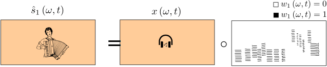
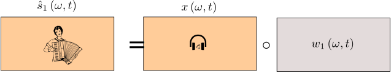
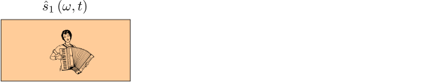
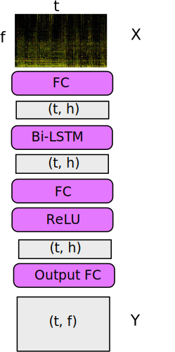

Music separation with DNNs: making it work
fabian-robert.stoter@inria.fr
faroit
antoine.liutkus@inria.fr
September 23rd, 2018

Music Unmixing/Separation


Applications

- Automatic Karaoke
- Creative Music Production
- Personal Remixing
- Music Education
- Pre-processing for MIR
Introduction
- Concepts and background
- A brief history
- Datasets
- Deep neural networks
Introduction
Concepts and background
Time-frequency representationsMixture spectrogram
Vocals spectrogram
Drums spectrogram
Bass spectrogram
Concepts and background
Hands on time-frequency representations
- Set up the ipynb
- For one track, display waveforms, play some audio
- Display spectrograms
Concepts and background
Time-frequency as pre-whitening

- Frames too short: not diagonalized
- Frames too long: not stationary
Concepts and background
Time-frequency as pre-whitening

Concepts and background
post-processing: filtering
- Get spectrograms of the sources
- Display the corresponding soft-mask for vocals
- apply it on the mixture, reconstruct and listen to the result
Concepts and background
post-processing: filtering

Concepts and background
post-processing: filtering

Concepts and background
post-processing: filtering

Concepts and background
post-processing: filtering

Concepts and background
post-processing: filtering


Concepts and background
post-processing: filtering

Concepts and background
The big picture

Introduction
A brief history
Rafii, Zafar, et al. "An Overview of Lead and Accompaniment Separation in Music." IEEE/ACM Transactions on Audio, Speech and Language Processing (TASLP) 26.8 (2018): 1307-1335.
A brief history: model-driven methods
Harmonicity for the lead

- Pitch detection
- Clean voices
- `Metallic` artifacts
A brief history: model-driven methods
Redundancy for the accompaniment: NMF

- Spectral templates
- Low-rank assumptions
- Bad generalization
A brief history: model-driven methods
Redundancy for the accompaniment: RPCA

- Low-rank for music
- Vocals as unstructured
- Strong interferences in general
A brief history: model-driven methods
Redundancy for the accompaniment: REPET

- Repetitive music
- Non-repetitive vocals
- Solos in vocals
A brief history: model-driven methods
Modeling both lead and accompaniment: source filter

- Harmonic vocals
- Low-rank music
- Poor generalization
A brief history: model-driven methods

Cascaded methods
- Combining methods
- Handcrafted systems
- Poor generalization
A brief history: model-driven methods
Fusion of methods

- Combining in a data-driven way
- Doing best than all
- Computationally demanding
Introduction
Datasets and evaluation
Music separation datasets
| Name | Year | Reference | #Tracks | Tracks dur (s) | Full/stereo? | Total length |
|---|---|---|---|---|---|---|
| MASS | 2008 | (Vinyes) | 9 | (16 7) | ❌ / ✔️ | 2m24s |
| MIR-1K | 2010 | (Hsu and Jang) | 1,000 | 8 | ❌ / ❌ | 2h13m20s |
| QUASI | 2011 | (Liutkus et al.) | 5 | (206 21) | ✔️ / ✔️ | 17m10s |
| ccMixter | 2014 | (Liutkus et al) | 50 | (231 77) | ✔️ / ✔️ | 3h12m30s |
| MedleyDB | 2014 | (Bittner et al) | 63 | (206 121) | ✔️ / ✔️ | 3h36m18s |
| iKala | 2015 | (Chan et al) | 206 | 30 | ❌ / ❌ | 1h43m |
| DSD100 | 2015 | (Ono et al) | 100 | (251 60) | ✔️ / ✔️ | 6h58m20s |
| MUSDB18 | 2017 | (Rafii et al) | 150 | (236 95) | ✔️ / ✔️ | 9h50m |
The musdb dataset
- 100 train / 50 test full tracks
- Mastered with pro. digital audio workstations
- Parser and Evaluation tools in
- https://sigsep.github.io/datasets/musdb.html

hands-on
- Install musdb
- Loop over some musdb tracks
Evaluating quality
 BSSeval v3
BSSeval v3
All metrics in dB. The higher, the better:
- SDR: Source to distortion ratio. Error in the estimate.
- SIR: Source to interference ratio. Presence of other sources.
- SAR: Source to artifacts ratio. Amount of artificial noise.
E. Vincent et al. "Performance measurement in blind audio source separation." IEEE transactions on audio, speech, and language processing 14.4 (2006): 1462-1469.
 museval (BSSeval v4)
museval (BSSeval v4)
- Better matching filters computed track-wise
- Faster 10x
F. Stöter et al. "The 2018 Signal Separation Evaluation Campaign." LVA/ICA 2018.
Evaluating quality
Hands-on
- Evaluate oracle separation on musdb
- Compare to state of the art (SiSEC18)
Introduction
Deep neural networks
Y. LeCun, et al. "Deep learning". nature, 521(7553), 436 (2015).
Deep neural networks
Basic fully connected layer


Deep neural networks
Basic fully connected network

Deep neural networks
Usual deep network

- Cascading linear and non-linear operations augments expressive power
- 7 millions parameters in our case
Deep neural networks
Training: vocabulary

Deep neural networks
Training: vocabulary

Deep neural networks
Training: vocabulary

Deep neural networks
Training: vocabulary

Deep neural networks
Training: the supervised approach

Deep neural networks
Training: the supervised approach

Deep neural networks
Training: the supervised approach

Deep neural networks
Training: the supervised approach

Deep neural networks
Training: the supervised approach

Deep neural networks
Training: the supervised approach

- $loss\leftarrow \sum_{(x,y)\in batch}cost\left(y_\Theta\left(x\right), y\right)$
- Update $\Theta$ to reduce the loss!
- We can compute $\frac{\partial loss}{\partial\Theta_{i}}$ for any parameter $\Theta_i$
- "The influence of $\Theta_i$ on the error"
- It's the gradient
- Computed through backpropagation
- A simple optimization: $\Theta_i\leftarrow \Theta_i - \lambda \frac{\partial loss}{\partial\Theta_{i}}$
- It's the stochastic gradient descent
- $\lambda$ is the learning rate
There are many other optimization algorithms...
Deep neural networks
Automatic differentiation with pytorch autograd
- Illustration of pytorch autograd
- Putting it together: learning a MNIST digit classification net ?
Modeling temporal data
colah's blog, Understanding LSTM Networks, 2015.
Modeling temporal data
From fully connected to the vanilla recurrent net

Modeling temporal data
From fully connected to the vanilla recurrent net

Modeling temporal data
From fully connected to the vanilla recurrent net

Modeling temporal data
From fully connected to the vanilla recurrent net

Modeling temporal data
The vanilla recurrent net

- $y_{t}=f\left(linear\left\{ x_{t},y_{t-1}\right\} \right)$
- Similar to a Markov model
- Exponential decay of information
- Vanishing gradient for training
- We need to model long-term dependencies
P. Huang, et al. "Deep learning for monaural speech separation. ICASSP, 2014.
Modeling temporal data
The long short term memory (LSTM)

Modeling temporal data
The long short term memory (LSTM)

Modeling temporal data
The long short term memory (LSTM)

Modeling temporal data
The bi-LSTM

- LSTM are causal systems
- Predicts future from past
Modeling temporal data
The bi-LSTM

- We can use anti-causal LSTM
- Different predictions!
Modeling temporal data
The bi-LSTM

- Independent forward and backward
- Outputs can be concatenated
- Outputs can be summed

Our vanilla deep neural net for separation

- Two layers
- dim LSTM output=512 $\Rightarrow$ 6M parameters
- Implement the model in pytorch
Get data into the model
Spectrogram sampling

Our vanilla deep neural net for separation

Outline
Representations
* Fourier transforms parameters* Input dimensionality reduction
* Excerpts length
* Standardization
Representation
Fourier transform parameters
* experiment: nfft, overlap [1024, 4096] x [0.5, 0.75]* fixed context for the network o results
Representation
Input dimensionality reduction
* Handcrafted representations: mel-scaleo Implementation using librosa
o Load weights again, test
Representation
Learnable dimensionality reduction
* Learnable feature reductiono Implementation in pytorch
Representation
Comparison
* Explain parameters tested [128 mel, 128 learnable] vs 4096 fft * Display comparison resultsRepresentation
Sample length
* sample length [64, 128, 256] frames. Tell in seconds ? * Display comparison resultsRepresentation
Standardization
* Concept * No standardization, non-learnable, learnable o Results o Check for mixture/5Outline
DNN Structure: optimizing the vanilla net
DNN structures: optimizing the vanilla net
Number of layers
DNN structures: optimizing the vanilla net
Hidden size
DNN structures: optimizing the vanilla net
Context length
DNN structures: optimizing the vanilla net
Results
* presentation of resultsDNN structures: optimizing the vanilla net
LSTM or BLSTM
* presentation of resultsDNN structures: optimizing the vanilla net
Skip connection
figureDNN structures: optimizing the vanilla net
Skip connection
* presentation of resultsRecap: current structure for the baseline
figureOutline
Trainng
* A quick starter* Cost function
* Training tricks
* Data augmentation
* Sampling strategy
Training
Cost function
* MSE on magnitude * KLTraining
Cost function
o resultsTraining tricks
Algorithm and learning rate
Training tricks
Regularization: dropout
* Concepto practice
Training tricks
Normalization: layernorm
* Concepto practice
Training tricks
Normalization: batchnorm
* Concepto practice
Training tricks
Results
Training
Data augmentation
* sample overlapTraining
Data augmentation
* training set sizeTraining
Data augmentation
o ResultsTraining
Sampling strategy
* Naive approach: concatenate all data and pick from thisTraining
Sampling strategy
 * two levels: track and sample
* two levels: track and sample* tracks: random or ensuring batch-diversity
* samples: random or ensuring all data per epoch
Training
Sampling strategy
o resultsTraining
Spectrogram quality
* Introducing musmag datasetTraining
Spectrogram quality
o Performance comparisonFinal baseline model
figureOutline
Testing
* Representation* Mono filter tricks
* Going stereo
* Multichannel Wiener filters
Testing: representations
Representation
o STFT wrongly doneo SDR / perceptual comparison
Testing: mono filter tricks
Introducing `norbert`
o Set-up the testing final systemo install norbert, try softmask
Testing: mono filter tricks
The huge impact of epsilons
* Adding epsilons to the spectrogramso impact on SDR
Testing: mono filter tricks
Soft masks, binary masks
* concepts* binary masks ideas
o implementations and comparison
Testing: mono filter tricks
Logit filters
* conceptso usage with norbert
o performance
Testing: going stereo
First strategy: pretend it's mono
* Illustration o performanceTesting: going stereo
Second strategy: pretend is mono twice
* illustration o performanceTesting: multichannel Wiener filters
Modelling left-right correlations
Testing: multichannel Wiener filters
Sources, mixtures
Testing: multichannel Wiener filters
Separation: conditioning Gaussians
Testing: multichannel Wiener filters
Expectation maximization: the big picture
Testing: multichannel Wiener filters
A look into norbert
Testing: multichannel Wiener filters
The smoothing trick
* concepto performance
Conclusion
Our resulting baseline
* A look at our baseline* overall importance of tricks
* Performance comparison with state of the art
o Resources
DNN structures: a quick guided tour
The convolutional neural network (CNN)
DNN structures: a quick guided tour
Cocktails of CNN-RNN
* U-NET* MM-densnet
DNN structures: a quick guided tour
Skip-connections
Conclusion
Tracks for future research
Conclusion
Concluding remarks
- Convergence of signal processing, probability theory and DL
- Learning with limited amount of data
- Model long term dependency
- Representation learning for sound and music
- Exploiting knowledge domain, user interaction
- Unsupervised Learning ?
Classical approach: an inverse problem

Old and new

Music separation as a machine learning problem
Generative or discriminative

Music separation as a machine learning problem
Classification ...
Binary Masking
... or regression ?
Softmask
Magnitude Spectrogram
Music separation as a machine learning problem
Supervised ...
- Single I/O: modeling sources independently
- Multiple I/O: modeling sources jointly
- Siamese networks, Chimera Networks
... or unsupervised ? (open direction)
Music separation as a machine learning problem
Modeling fixed-sized spectrograms ... ?
- Separating chunks: straightforward reuse of image models
- Batching over chunks
- Fully connected, etc
... or learning dynamic models ?
- Very long-term dependencies !
- LSTM, CNN, etc
A Baseline System
Architectures II
- Bidirectional LSTM [Huang 2014, Uhlich 2015, Takashi 2018]
- Sequence2Sequence
- Input (mix): (sample, frames, frequency)
- Output (targets): (sample, frames, frequency, source)
DEMO
How trendy is DNN based source separation?
- Fully Convolutional Networks
- Batch Normalization
- Skip-Connections
- GAN
- End-to-End Timedomain (Wavenet)
- Capsule Networks
- Attention
- Reinforcement Learning
- ...
Resources
- SiSEC 2018 Website: sisec18.unmix.app
- References and Software tools: sigsep.github.io